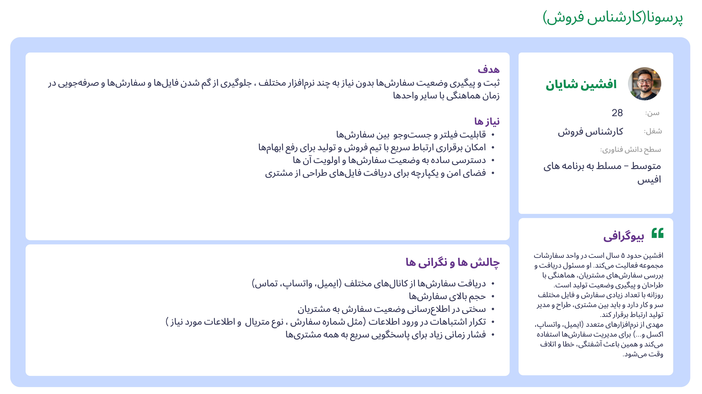
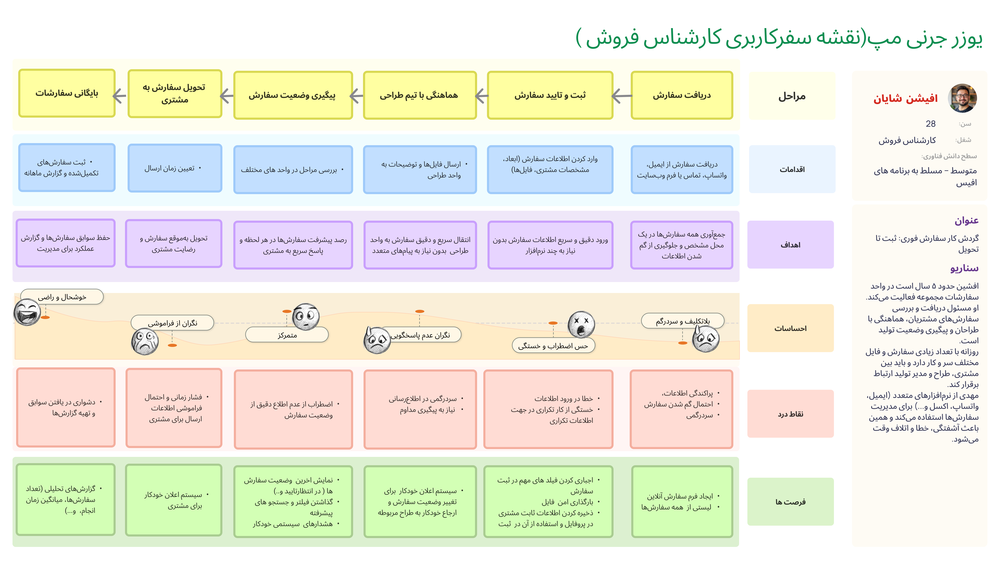
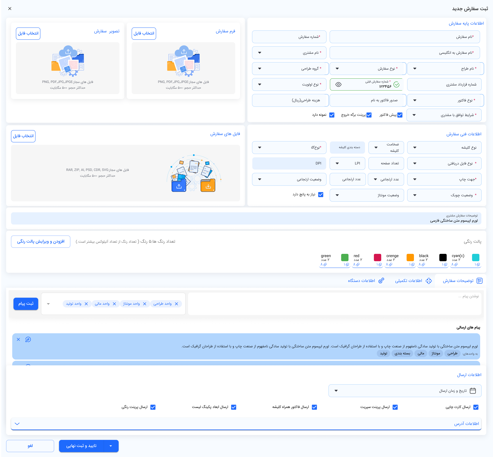
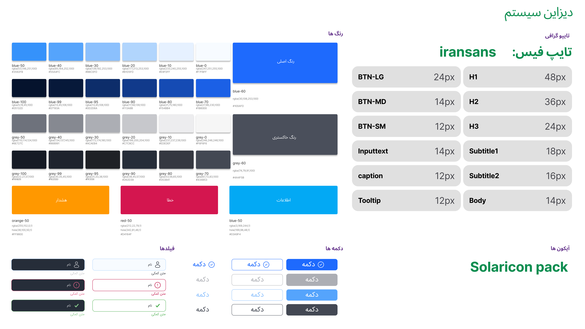

01 — Overview
Project Overview
Every design project is a story of discovering, listening, and building. This project started within a manufacturing company where orders were submitted through digital forms. However, the processes were still fragmented and unclear. Employees often had to search through large amounts of data and files to track the status of each order, while customers were left waiting for updates. As the Product Designer, I was responsible for the end-to-end product design process and worked on designing multiple modules for managing internal workflows.For this case study, I focus on one of the product's most important challenges: optimizing the order registration and approval process, as this was one of the major sources of friction for users.
Project Goal
The primary goal was to design an integrated, fast, and transparent order management system.The project focused on:
- Reducing repetitive data entry
- Improving the speed of order registration and approval
- Making order status more visible and understandable
- Reducing manual searching and follow-up
- Minimizing human error throughout the workflow
02 — Research & Findings
Research & Discovery
To understand the existing process, I conducted interviews and held multiple sessions with managers and employees across different departments.The research showed that the system served seven different user groups, each with different goals, responsibilities, and touchpoints with the order process.To understand these differences, I created Personas and User Journey Maps for the different user groups.For this case study, I focus on the Sales Specialist, one of the primary roles responsible for entering orders into the system.


03 — DESIGN
Problems & Design Solutions
01 — Repetitive Customer Information
ProblemStatic customer information had to be entered repeatedly for different orders.While this might not seem significant for a single order, repeated data entry became a source of wasted time and potential errors when the process was repeated frequently.
Design OpportunityReduce repetitive data entry.
SolutionI introduced a customer profile, dropdown lists, and field-level validation to reduce unnecessary manual input. One of the main goals was to prevent users from entering information that the system already knew. Therefore, static customer information was stored in the customer's profile and could be reused when creating future orders. The workflow shifted from: Entering information → Selecting existing information This directly contributed to reducing the time required to register an order.

02 — Lack of Order Status Visibility
ProblemUsers could not easily understand what stage an order was currently in.As a result, tracking an order often required additional coordination and manual checking.
Design OpportunityCreate transparency around order status and progress.
SolutionI defined clear order statuses and introduced appropriate visual indicators and color coding to make them visible within the interface. The goal was to allow users to answer a simple question at a glance:
“What stage is this order currently in?”
03 — Difficulty Finding Orders
ProblemAs the number of requests increased, finding a specific order became more difficult.New orders could also get lost among existing requests, making manual scanning necessary.
Design OpportunityOrders needed to be identifiable through key information and easily searchable and filterable, allowing users to find the required order without manually reviewing the entire list.
SolutionI introduced search, filtering, and automatic notifications. As the number of orders increased, search and filtering became essential parts of the experience. Users needed to find an order without manually going through the entire list. Therefore, the order dashboard included search and filtering based on relevant order information, along with automatic notifications to alert users when a new order required their attention.

The product was built using Material Design as the foundation. Where necessary, the design system was customized based on the specific requirements of the product, particularly its B2B workflows, information density, and interaction patterns.
04 — Testing
Testing & Measurement
One of the key metrics defined at the beginning of the project was task completion time the time required to complete an order from registration to final approval. After the initial design, the main workflows were evaluated with users. The testing focused on four core tasks:
- Registering an order
- Finding an order
- Checking order status
- Approving an order
Order Registration Time
Before the new system was implemented, registering an order took approximately 5 minutes on average. One of the main contributing factors was the repetitive manual entry of customer information. After the redesign, the average registration time decreased to 3 minutes. Result: 40% reduction in order registration time.
Order Approval Time
Before the new system, the order approval stage took approximately 10 minutes on average. Orders could sometimes get lost among a large number of requests, slowing down the process. The main contributing factor was the lack of automation in the approval stage. By introducing automatic notifications, prioritizing new orders at the top of the list, and using clear status colors, the average approval time decreased to 5 minutes. Result: 50% reduction in order approval time.
05 — Result & Learning
Outcome
The redesigned workflow made the order registration and approval process faster, clearer, and easier to manage.
Key Results
The new workflow also reduced repetitive data entry, improved visibility into order status, and helped users find and act on orders more efficiently.
What I Learned
Small Changes Can Have a Big Impact
This project reinforced that efficiency is an important part of user experience, especially in B2B products. Small changes such as status colors and notifications had a significant impact on reducing errors and improving workflow organization. For users who work with orders every day, saving a few minutes or eliminating repetitive data entry can be more valuable than a visually impressive interface.
Continuous Testing & Iteration
Continuous testing, iteration, and refinement were key to transforming the system from a basic form into a more stable and efficient product. Each iteration helped identify friction points, validate design decisions, and improve the overall workflow.